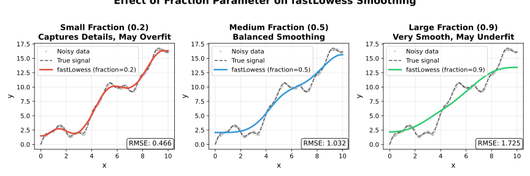
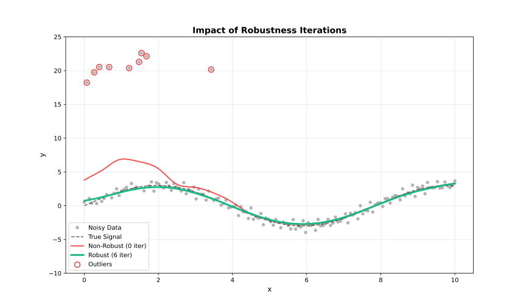
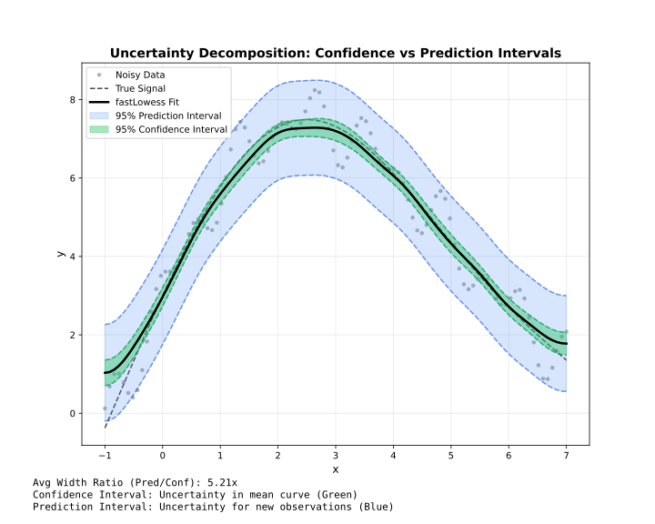

Concepts
Understanding how LOWESS works and when to use it.
What is LOWESS?
LOWESS (Locally Weighted Scatterplot Smoothing) is a nonparametric regression method that fits smooth curves through scatter plots without assuming a global functional form.
Unlike parametric methods (linear regression, polynomial fitting), LOWESS adapts locally to the data structure, making it ideal for:
- Exploratory data analysis — Discover patterns without assumptions
- Trend estimation — Extract signals from noisy time series
- Baseline correction — Remove systematic effects in spectroscopy
- Genomic smoothing — Smooth methylation, ChIP-seq, or expression data
How It Works

LOWESS fits local weighted regressions at each point, using a focused local window around each evaluation point.
For each point in your data, LOWESS:
- Selects neighbors — Choose the nearest points (controlled by
fraction) - Assigns weights — Closer points get higher weights (using a kernel function)
- Fits locally — Perform weighted least squares regression
- Extracts value — Use the fitted value as the smoothed estimate
- Iterates (optional) — Reweight points based on residuals to reduce outlier influence
The Fraction Parameter
The fraction (also called bandwidth or span) is the most important parameter. It controls what proportion of data is used for each local fit.

Small fraction vs large fraction — bandwidth controls how closely the fit follows local structure.
| Fraction | Effect | When to Use |
|---|---|---|
| 0.1–0.3 | Fine detail, follows data closely | Rapidly changing signals |
| 0.3–0.5 | Balanced smoothing | Most applications |
| 0.5–0.7 | Heavy smoothing | Noisy data, trend extraction |
| 0.7–1.0 | Very smooth | Strong noise, global trends |
Start with fraction=0.67 (the default) and adjust based on visual inspection. Use cross-validation for automated selection.
Robustness Iterations
Standard LOWESS is sensitive to outliers. Robustness iterations downweight points with large residuals:

Non-robust LOWESS (iterations=0) vs robust LOWESS — outlier influence is suppressed through iterative reweighting.
| Iterations | Effect | When to Use |
|---|---|---|
| 0 | No robustness (fastest) | Clean data, speed-critical |
| 1–3 | Moderate robustness | Most applications |
| 4–6 | Strong robustness | Data with outliers |
| 7+ | Very strong | Heavy contamination |
Confidence vs Prediction Intervals

Confidence intervals (narrow, mean curve uncertainty) vs Prediction intervals (wide, new-point uncertainty).
| Interval Type | What It Represents | Width |
|---|---|---|
| Confidence | Uncertainty in the mean curve | Narrow |
| Prediction | Uncertainty for new observations | Wide |
- Use confidence intervals to show where the true trend likely lies
- Use prediction intervals to show where new data points might fall
Execution Modes
Choose the right mode based on your use case:
| Mode | Use Case | Memory | Features |
|---|---|---|---|
| Batch | Complete datasets | Entire dataset | All features |
| Streaming | Large files (>100K points) | One chunk | Residuals, robustness |
| Online | Real-time data | Fixed window | Incremental updates |
Quick Decision Guide
| Situation | Mode |
|---|---|
| Data fits in memory; needs intervals or CV | Batch |
| Data too large for memory or arrives in chunks | Streaming |
| Data arrives point-by-point in real time | Online |
Key Advantages
| Feature | LOWESS | Polynomial Regression | Moving Average |
|---|---|---|---|
| No parametric assumptions | ✓ | ✗ | ✓ |
| Adapts to local structure | ✓ | ✗ | Partial |
| Robust to outliers | ✓ | ✗ | ✗ |
| Uncertainty estimates | ✓ | ✓ | ✗ |
| Handles irregular sampling | ✓ | ✓ | ✗ |
Next Steps
- Quick Start — See it in action
- API Reference — All configuration options
- Boundary Handling — Edge bias reduction strategies
- Robustness — Outlier downweighting methods
- Scaling Methods — MAD, MAR, Mean scale estimation
- Merge Strategies — Chunk reconciliation in Streaming mode